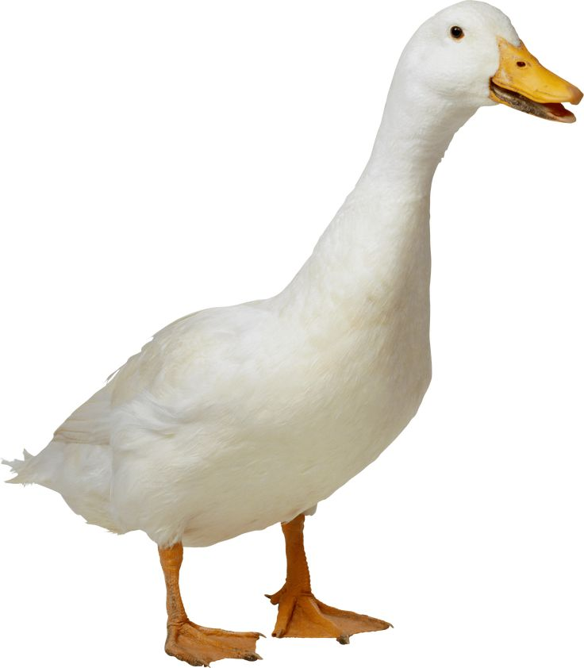

Transform #1

Transform #2
Amazing Shifting Colors
Transform #3
Transform #4
Drain Me
Transform #1 |
|---|
| The image below will be transformed in 2 ways. The image will be rotated by 30 degrees and it will be scaled to 60% of the size in the horizontal direction (~240 px) and 40% of the size in the vertical direction (~107 px). |
|
Transform #2 |
| The cell below will transition when a mouse hovers over it displaying the hidden text. The background color will change from Black to White over a period of 1.5 seconds. |
Amazing Shifting Colors |
Transform #3 |
| The image underneath reflects an example of skewing an image in two directions giving the impression of a dancing duck. This is accomplished by the image skewing a different direction when the mouse is hovering over the duck. In this case the image begins at a 40 degree skew on its X-axis and then jumps to a -30 degree skew on that same axis. |
|  |
Transform #4 |
| The text below will instantly lose contrast and appear washed out while the users mouse is hovering over it. Additionally, over a period of 20 seconds, the text will begin to shrink to half of its original size. Once the users mouse is no longer hovering over the given text it will regain its color and begin to grow back to its original size. |
Drain Me |